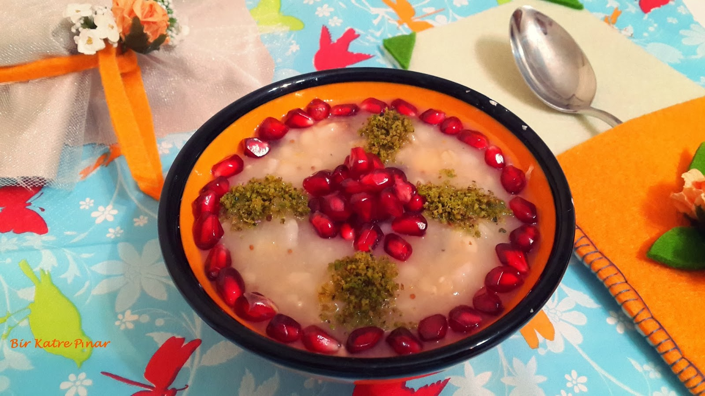
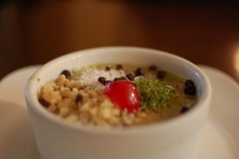
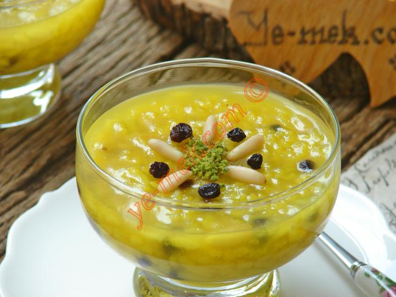
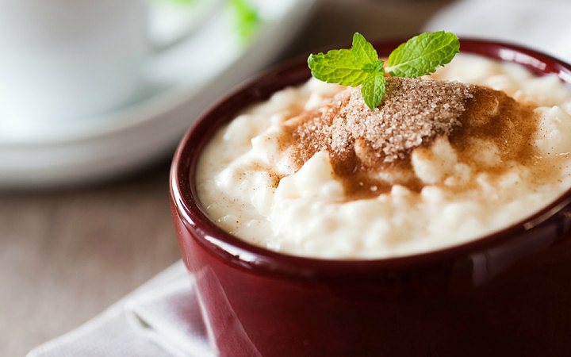
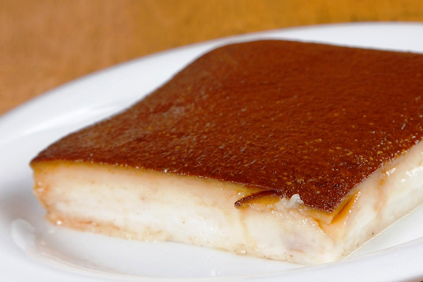
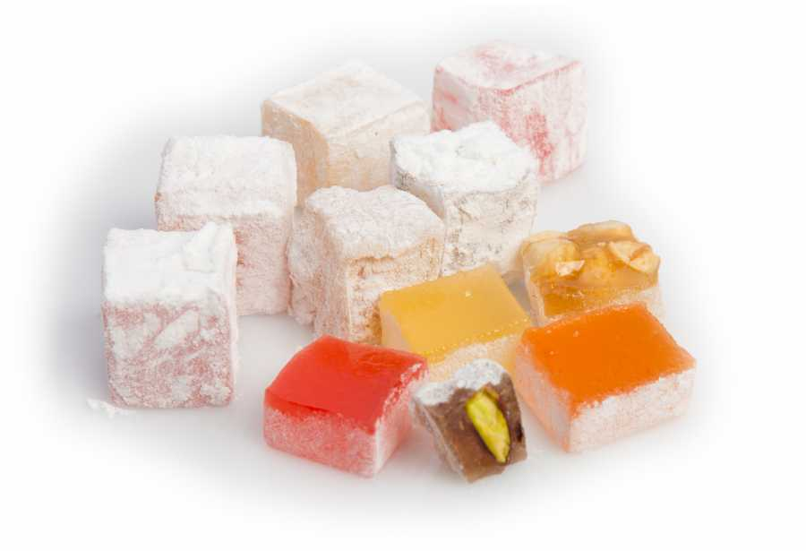
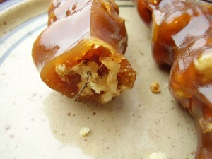
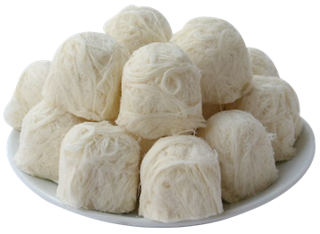

Most Popular Turkish Desserts
Turkish cuisine is very rich in desserts. The diversity comes from the fact that Turkish cuisine is the successor of the Ottoman culture. Another factor is the geographic scene. The country spreads over a land of 783.562 km² with different regions and variations on vegetation within its borders and also the Mediterranean and Persian neighbors had their influence. 
Pudding Desserts
Aşure
According to Islamic belief, when Noah survived the big flood, he made a pudding dish with the ingredients that were available. There are many variants of this Turkish dessert. Basically this is a mixture of sugar, grains like wheat, chickpea and haricot beans with dried fruits like fig, appricot and raisin as well as nuts like hazelnut, and walnut for dressing.
The dessert comes with a religious custom. The first month of the Islamic calendar is Muharrem. It is a good deed to fast the first 10 days of Muharrem, and then on the 10th day, the Day of Ashure, to cook and share ashure with your neighbors and relatives. Therefore ashure has had a binding social value. Today, the tradition of sharing ashure is still very much alive.
Zerde
 A traditional Turkish dessert for weddings and birth celebrations. This yellow color pudding has very simple ingredients: water, rice, corn starch as well as saffron and curcuma to create its yellow color.
The garnishing of zerde varies depending on local fruits such as currant, pine nuts, rose water, pistachios and pomegranate.
Sütlaç
 All over the world people love and eat rice pudding. It is so widespread that every country has its own preparation style. In Turkey people cook rice pudding with water, milk, rice, sugar and rice flour. In modern versions people added vanilla flavor, too.
Cinnamon or grinded hazelnuts are the two main dressings. After it is browned in a salamander broiler it becomes the Turkish dessert called fırın sütlaç, or oven baked rice pudding.
Tavuk Göğsü
Chicken breast is the direct translation of this dessert, and shockingly that is also the ingredient of this thick pudding like delicacy. After boiling the chicken breast in water and ripping it into small fibers, it is boiled even more with milk, sugar and rice or corn starch. Cinnamon is the main dressing/flavoring element.
Kazandibi
 When you cook tavuk göğsü pudding on a tray with sprinkled powder sugar at the bottom, then it is called kazandibi – the bottom of the pot. The stove fire caramelizes the sugar so it colors and sweetens the thick pudding. It is scraped and served folded, hence the brownish delicious savor faces its admirers. If you leave the chicken out of the recipe, then it is called muhallebi kazandibi.
Keşkül
It is a simple yet delicious pudding cooked with crushed almonds, grated coconut, milk, sugar, rice flour and corn or potato starch. Coconut and blanched almond flakes or pistachios sprinkled on the top are the finishing touch. Like the rest of the pudding desserts it is served cold or maximum at room temperature.
Confectionery Desserts
Lokum (Turkish Delight)
The original date for the invention of lokum is not clear. However, it is certain that Ali Muhittin Hacı Bekir’s lokums introduced the taste to the world. He opened his confectionery shop in Istanbul in 1776. An English explorer got lokum from his shop and took them to England. Turkish delight’s fame spread since then.
Originally, there were three colors meaning three flavors: red – rosewater, yellow – lemon peel and green – bitter orange. With today’s rich variety of ingredients and nuts there currently are several flavors such as rose, pistachio, hazelnut, walnut, almond, coconut and almond, cream, cream with cinnamon, mint, mastic, cinnamon, ginger, clove and coffee, and fruit flavors like sour cherry, strawberry, orange, apricot, and lemon.
Cevizli Sucuk / Küme
 Sucuk is a spiced sausage similar to pepperoni. This Turkish dessert lends its name from it because it resembles a sausage. Together with walnuts, almonds and hazel nuts are also commonly used. The nuts are lined up on a string, dipped in molasses of mainly grapes. Some varieties of mulberry and pear molasses taste equally delicious. Needless to say it is a calorie boost, yet very rich in minerals and vitamins such as A, D, E and K.
Pişmaniye
Also known as Turkish fairy floss which makes sense given its texture. Pişmaniye is another Turkish dessert with a very old traditional taste. The place of birth is the Kandıra district in the city of Kocaeli. It dates back to the 15th century.
Sugar is melted, frozen, shaped like a big ring and placed on the mixture of roasted flour with butter. The rest of the process is constantly pulling the ring and shaping it back to a ring again until it becomes flossy.
It is similar to cotton candy but different in texture. It is garnished with different flavors like ground pistachios or cacao. It looks a bit messy — which it actually is while eating because it falls off in very small pieces — and it is also sticky. Yet, the trouble is certainly worth trying. Thanks to the modernized packaging you sure can take a box back home as a nice Turkish souvenir.